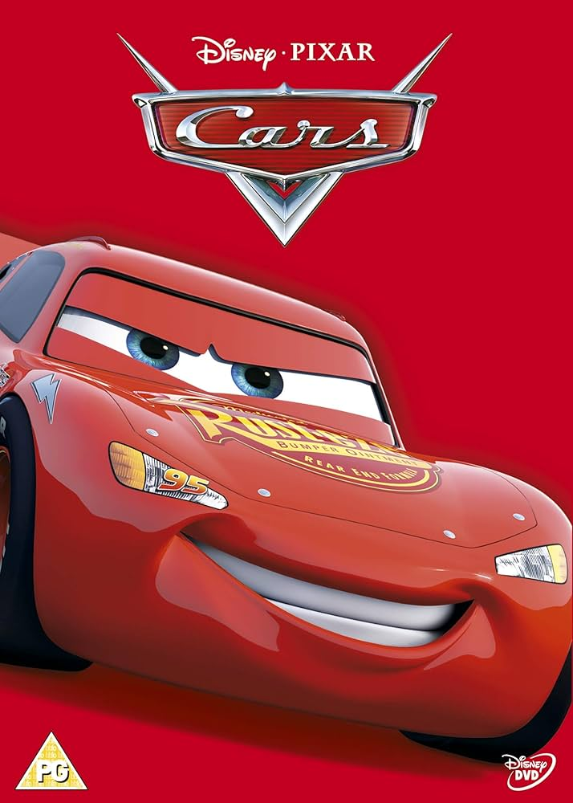
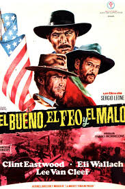
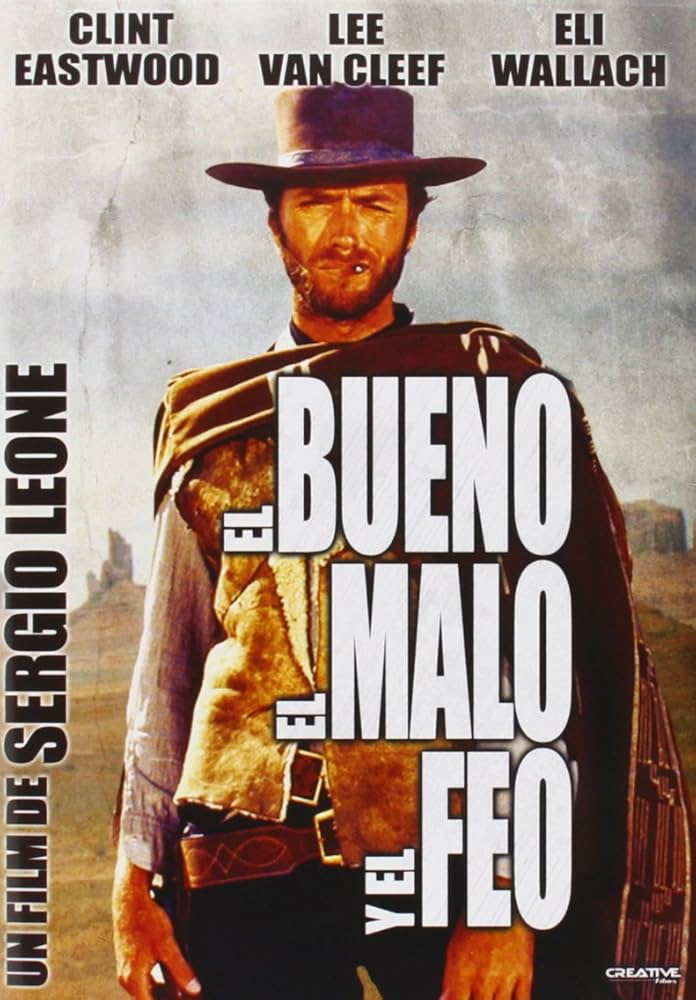
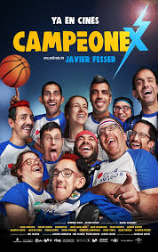
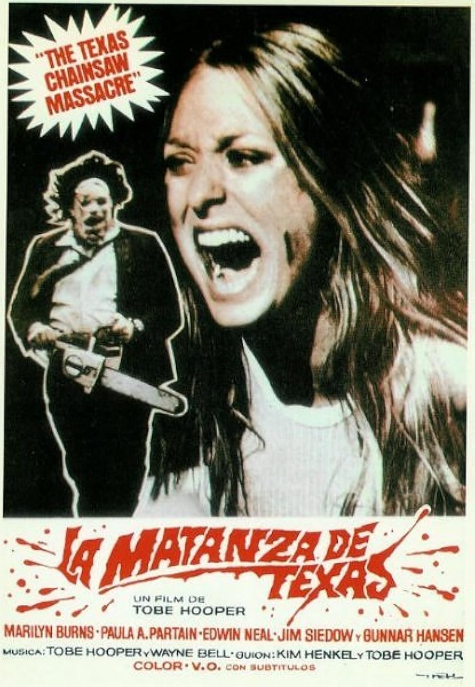
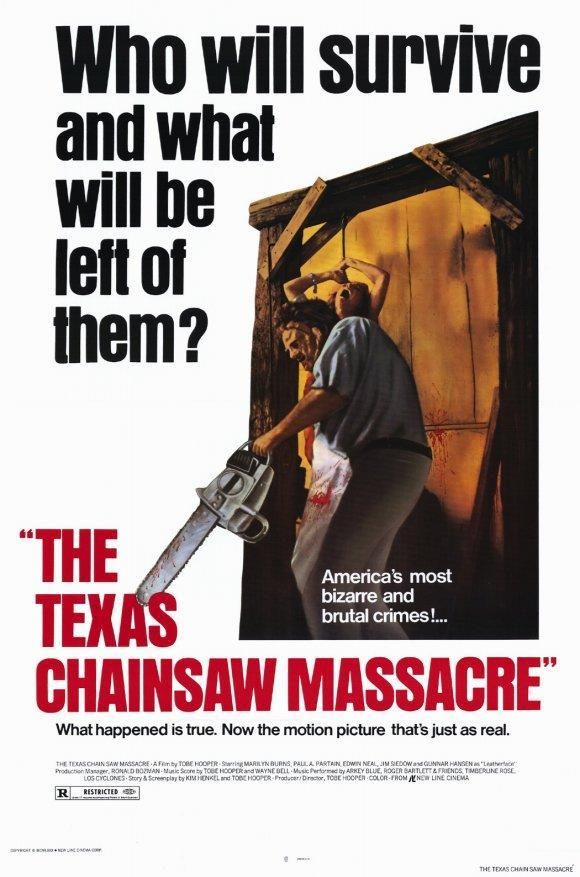
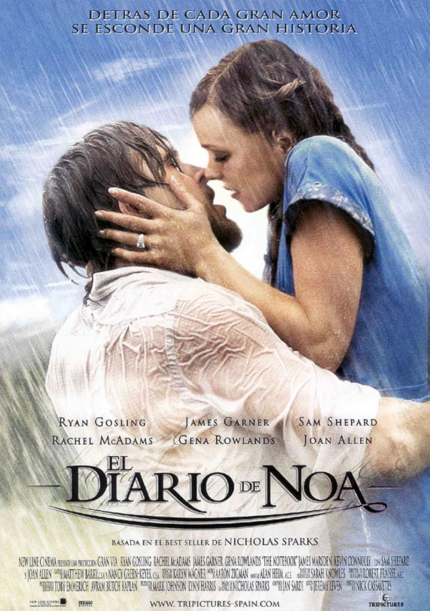
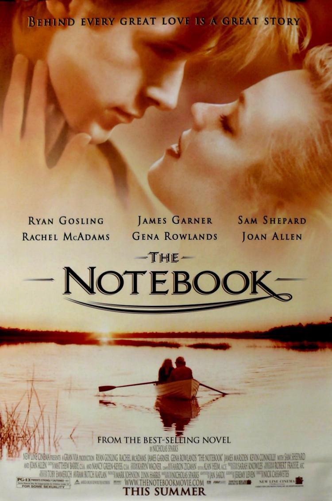
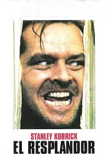
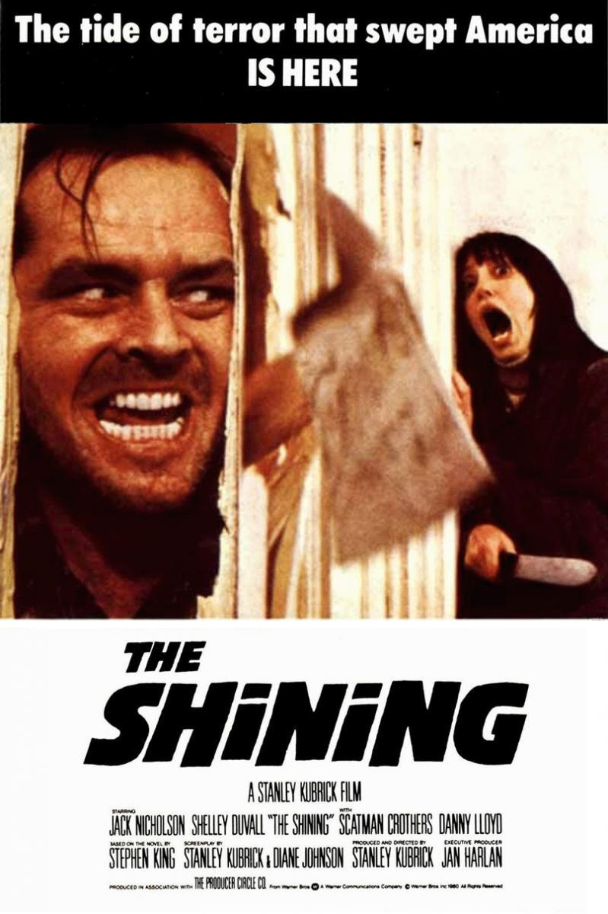

Cars:
El aspirante al título de la Copa Piston se enfrenta a multitud de problemas para conseguir su
primera
Copa Piston
- Director: John Lasseter
- Protagonista: Rayo McQueen
- Valoración: 4.5/5
-
Prioridad: alta

 El bueno, el feo y el malo:
Son tres cazadores de recompensa que buscan un tesoro que ninguno de ellos puede encontrar sin la
ayuda
de los otros dos.
El bueno, el feo y el malo:
Son tres cazadores de recompensa que buscan un tesoro que ninguno de ellos puede encontrar sin la
ayuda
de los otros dos.
- Director: Sergio Leone
- Protagonista: Clint Eatwood, Eli Wallach y Lee Van Cleef
- Valoración: 5/5
- Prioridad: media


Campeonex
Esta película sigue a un equipo de personas con discapacidad intelectual que cambian el baloncesto
por
el atletismo y los e-sports.
- Director: Javier Fesser
- Protagonista: Brianeitor
- Valoración: 3.5/5
- Prioridad: baja

La matanza de Texas 1974
Película clásica de terror donde un grupo de jóvenes se encuentra con una familia de asesinos.
- Director: Tobe Hopper
- Protagonista: Marilyn Burns
- Valoración: 4/5
- Prioridad: alta


El diario de Noa
Es una historia romántica sobre el amor entre Noah y Allie.
- Director: Nick Cassavetes
- Protagonista: Ryan Gosling
- Valoración: 3.5/5
- Prioridad: medio


El Resplandor
Historia de terror psicológico sobre un escritor que se vuelve loco en un hotel aislado.
- Director: Stanley Kubrick
- Protagonista: Jack Nicholson
- Valoración: 2/5
- Prioridad: urgente

